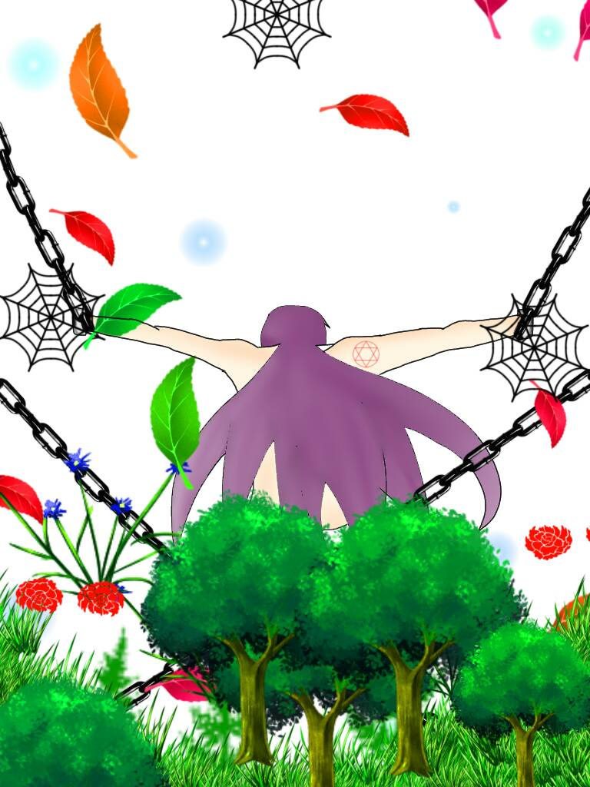

倒吊者 The Hanged Man
元素水
對應牌8力量
對應星座海王星
牌義倒懸者是為集體無意識的牲禮，我們可以看到被倒吊的年輕人，
他的身體被綁在樹上，但是他臉上的表情並不痛苦，反而發出沉著、順從而堅忍的光芒，
樹代表生命無窮的力量，他腳弓成的形狀，代表物質的無意識，而他手背成的形狀代表精神決心，
他頭上的光圈，代表黑暗中的光芒，吊人就像樹木耐心的挺過整個冬天，而土地會補足養分供春夏備用，“犧牲”為特性。
關鍵語順從、信任、調整、奉獻、慈悲★暗示需要順從面對現狀的一段時間
牌正面反省的時光，專注某理想或信仰，休息以習得內在智慧。
牌反面無法得到超越社會壓力的自由，自私，角色扮演自我設限。
吊人在實際占卜案例上，其實是一張很辛苦的牌，
代表當事人動彈不得、受到限制、不被理解、事情沒有任何進展、消極被動等，
現在的犧牲與奉獻看似白費，但事情的結果，絕對不是現在就能下定論的，
此刻只能學習吊人的精神，以退為進，默默等待。如果在建議牌的時候抽到吊人，
通常都是建議當事人換位思考，以不同的角度去看，很多事情都是一體兩面的，保持思維上的彈性，以新的角度去評估眼前的事物。
離開卡牌